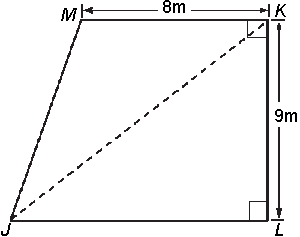
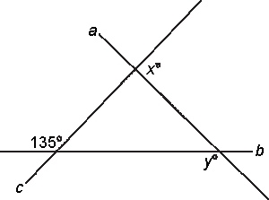
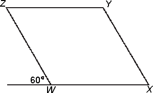

Directions: Select the answer choice which best answers each question.
-
1. What is $5\%$ of 5,000?
(A) 25
(B) 250
(C) 1000
(D) 2,500
(E) 10,000
-
2. Set A = {2, 5, 7, 9, 14}. Set B = {2, 3, 4, 9, 10, 14}.
Sets A and B are shown above. How many numbers are in the intersection of sets A and B?
(A) Two
(B) Three
(C) Five
(D) Six
(E) Seven
-
3. Plane X flies 2,000 kilometers in 5 hours. Plane Y flies half as far in twice the time. What is the average speed, in kilometers per hour, of plane Y?
(A) 100
(B) 400
(C) 500
(D) 750
(E) 1,000
-
4. If Mahmoud gets an 8% increase on a $40,000 salary, what is his new salary?
(A) $42,000
(B) $43,200
(C) $44,000
(D) $45,000
(E) $48,000
-
5. The lengths of two sides of a triangle are 6 and 7. Which of the following could be the length of the third side?
(A) 1
(B) 6
(C) 13
(D) 17
(E) 20
-
6. If m and n are different members of the set {0, 2, 3, 5, 6, 25}, and $\sqrt{m} = n$ then m =
(A) 2
(B) 3
(C) 5
(D) 6
(E) 25
-
7. If pqrs = 3 and qrst = 0, which of the following must equal 0?
(A) pq
(B) ps
(C) qr
(D) rs
(E) st
-
8. A rectangular painting is 24 inches wide and 32 inches long. A replica of the painting is made with a length of 52 inches. If the ratio of the width to length remains the same as in the original painting, what is the width, in inches, of the enlarged replica?
(A) 39
(B) 44
(C) 624
(D) 1,248
(E) 1,664
-
9. A store purchases a bicycle at a wholesale cost of w dollars. It then sells the bicycle at a retail price that is 40% above the wholesale cost. In terms of w, what is the sale price of the bicycle?
(A) 0.40w
(B) 0.60w
(C) 1.04w
(D) 1.4w
(E) 14w
-
10. If all of the ballerinas in the Chamber Dance Company have studied dance for more than ten years, which of the following statements must be true?
(A) No ballerina who has studied dance for less than ten years is a member of the Chamber Dance Company.
(B) All ballerinas who have studied dance for more than ten years are members of the Chamber Dance Company.
(C) All ballerinas who are not members of the Chamber Dance Company have studied dance for less than ten years.
(D) Every member of the Chamber Dance Company who has studied dance for more than ten years is a ballerina.
(E) There is one ballerina in the Chamber Dance Company who has studied dance for less than ten years.
-
11. What is the radius of a circle that has a circumference of $2\pi$?
(A) 1/4
(B) 1/2
(C) 1
(D) 2
(E) 4
-
12. For which of the following sets of numbers is the median less than the mode?
(A) {3, 4, 6, 7, 7}
(B) {3, 3, 5, 6, 7}
(C) {2, 4, 6, 7, 8}
(D) {1, 1, 3, 5, 7}
(E) {2, 4, 4, 9, 10}
-
13. In seven years, Neera will be 45 years old. How old was Neera y years ago?
(A) y + 38
(B) y + 52
(C) 38 - y
(D) 52 - y
(E) y - 38
-
14. In the trapezoid above, the distance from J to K is 15 meters. What is the area of the trapezoid in square meters?

(A) 54 $m^2$
(B) 72 $m^2$
(C) 90 $m^2$
(D) 120 $m^2$
(E) 121.5 $m^2$
-
15. In the figure above, x + y =

(A) 180
(B) 205
(C) 215
(D) 225
(E) It cannot be determined from the information given.
-
-
17. If $\frac{7x-5}{x+1} = x$ and $ x \neq 1 $, what is the value of x2 + 6x - 5?
(A) 0
(B) 5
(C) 25
(D) 30
(E) 50
-
18. If $f(x)=ax - \frac{b}{x}$ which of the following represents $f(\frac{1}{a}$?
(A) 1 - ab
(B) $1-\frac{1}{ab}$
(C) - 1 + ab
(D) $a^2 -\frac{b}{a}$
(E) $\frac{b}{a} - a^2$
-
19. If x DVDs cost y dollars, what is the cost, in dollars, of z DVDs?
(A)$\frac{x}{yz}$
(B) $\frac{xy}{z}$
(C) $\frac{y}{xz}$
(D) $\frac{z}{xy}$
(E) $\frac{yz}{x}$
-
20. Figure WXYZ is a parallelogram with four equal sides. What is the ratio of the length of segment XZ (not shown) to the length of segment YZ?

(A) $1:\sqrt{3}$
(B) $1:\sqrt{2}$
(C) 1:1
(D) $\sqrt{3}:1$
(E) 3:1